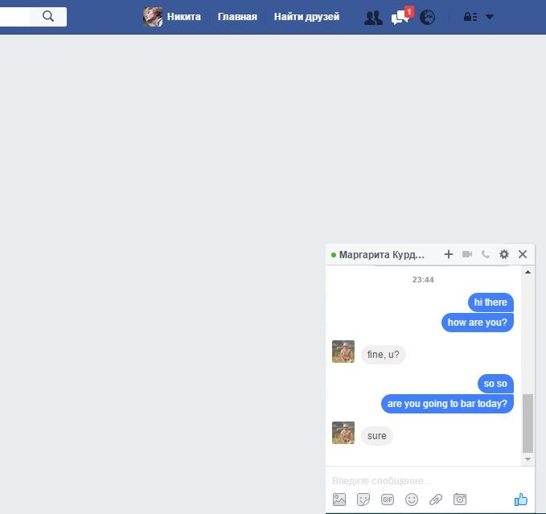
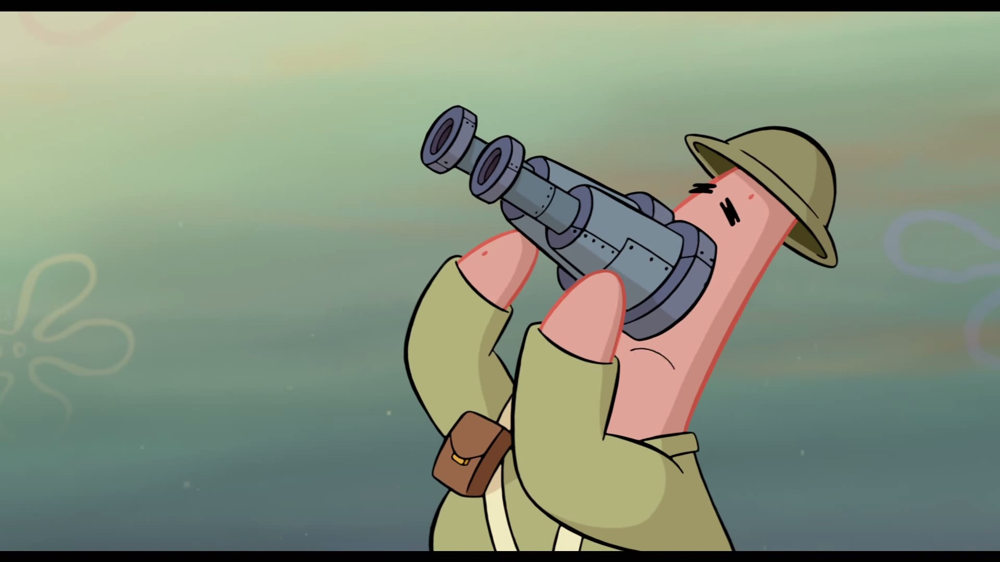
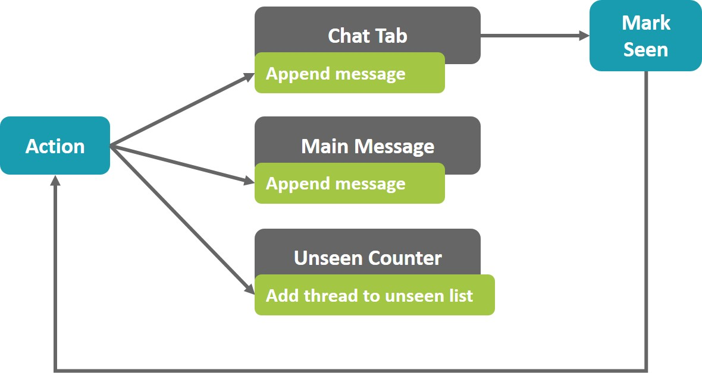

function newMessageHandler(newMessage) { var chatTab = ChatTabs.getChatTab(message.threadId); chatTab.appendMessage(message)}
Chat with counter

function newMessageHandler(newMessage) { UnseenCount.increment(); var chatTab = ChatTabs.getChatTab(message.threadId); chatTab.appendMessage(message) if (chatTab.hasFocus()) UnseenCount.decrement();}
What about this?
Chat, threads and counter
function newMessageHandler(newMessage) { UnseenCount.increment(); var chatTab = ChatTabs.getChatTab(message.threadId); chatTab.appendMessage(message) var messageView = Messages.getOpenView(); var threadId = messageView.getThreadId(); if (threadId === message.threadId) messageView.appendMessage(message) if (chatTab.hasFocus() || threadId === message.threadId) UnseenCount.decrement();}
We might doing something wrong in general?

External control
Internal control
Internal control: action flow

We are good boys, we are not mixing view with model, aren't we?
Generic system
Here is flux
Redux
Redux evolves the ideas of Flux, but avoids its complexity by taking cues from Elm.
Dan Abramov
Single source of truth
The state of your whole application is stored in an object tree within a single store.
First redux pricipal
import { createStore } from 'redux';const store = createStore(...);
State is read-only
The only way to change the state is to emit an action, an object describing what happened.
Second redux pricipal
store.dispatch({ type: 'ANY_ACTION', payload: 'some data goes here' error: false // to deliver error})
Changes are made with pure functions
To specify how the state tree is transformed by actions, you write pure reducers.
Third redux pricipal
function myReducer(state = {}, action) { switch (action.type) { case 'ACTION_I_KNOW_HOW_TO_PROCESS': return { ...state, some: change } default: return state;}
redux-devtools
Why should I use redux?
flux like solution
it is maintained by Dan Abramov (Facebook developer)